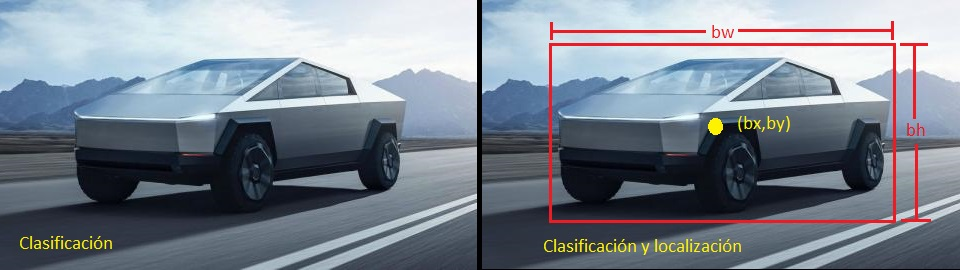

Motivación
El área de visión por computadora se ha ido popularizando conforme avanza el desarrollo tecnológico, motivada principalmente por emular la visión humana. Conforme una persona se desarrolla aprende fácilmente a detectar, clasificar objetos, colores y hasta predecir movimientos, todo esto y más lo hace sin sentir que el acto de visualizar requiera de toda su energía o que una gran complejidad esté involucrada en el proceso.La realidad es que el cerebro humano invierte de manera directa o indirecta aproximadamente la mitad del cerebro para hacer esto posible. En términos digitales podría decirse que procesa alrededor de 60 imágenes por segundo, imágenes compuestas por puntos que en el mundo digital conoceríamos como pixeles. Emular las actividades que para los humanos son triviales para una computadora siempre han representado un gran reto y el área de visión no es la excepción hoy en día existen técnicas del área de matemáticas y computación creadas para simular el proceso de visión en computadoras y en ente trabajo se ilustrará una de las más poderosas que muestra como una computadora puede ver los objetos del mundo real.
Introducción
Llego el momento de subir el nivel, en la publicación que subí llamada "¿cómo ven las computadoras?" les comentaba sobre todo el procesamiento que se lleva clasificar una imagen y tal, además mostraba un ejemplo sobre la arquitectura de la red neuronal que permitía clasificar objetos en una fotografía,en esta ocasión les mostrare una aplicación real que hará que se les pongan los pelos de punta y veran la película de terminator como algo un poco más real. (terminator 2 que es la más chila ;) ) El proyecto se tratará sobre una arquitectura que permite como lo dice el título localizar y clasificar objetos en el mundo real, les resultara muy entretenidio por que mostraré algunos ejemplos.
La red neuronal YOLO (you only look once)
YOLO es un sistema encargado de detectar diferentes objetos en imágenes, en su momento causo una gran revolución en el campo de las redes neuronales, gracias al planteamiento de una arquitectura que funciona mucho mejor que otras, logrando excelentes resultados. El problema principal era que los sistemas que existían en ese momento utilizaban una técnica llamada "sliding windows" que resultaban ser bastante ineficientes y no conseguían llegar a una análisis en tiempo real, la esperanza de estos sistemas era que las GPU's (unidades de procesamiento grafico) mejorarían y el tiempo de análisis mejoraría bastante .es en ese momento cuando llega joseph raymond y compañia, como cuando le estaban partiendo en su madre al octágon y llegaba la parka a tirarle un paro para acabar con todo eso.Introducción de nuevos elementos
Para comprender el funcionamiento de la arquitectura de red neuronal YOLO, debo introducir nuevos elementos ya que
ahora la tarea no es solo clasificar el objeto, el algoritmo también debe decirnos donde se encuentra el objeto encerrando su posición en un rectángulo es decir,
clasificar, localizar y señalar el objeto.
Les presentaré nuevas variables que formaran parte de la arquitectura, estas variables son importantes, ya que están directamente relacionadas con la posición
del objeto que detectemos en la imagen.

Estas serán las responsables de señalar mediante un rectángulo la posición el objeto.

Con la imagen del "cybertruck" pretendo resaltar la diferencia de la red neuronal convencional de la clasificación y la nueva en la que además de clasificar localiza, en donde vemos también a que se refieren cada uno de los nuevos parámetros que se han introducido. En resumen al ingresar la imagen a nuestra red neuronal no solo como resultado nos arrojara la clase del objeto al que pertenece la imagen también nos dará los valores de bx,by,bh,by.Para lograr todo esto que acabo de decir, se necesitara un algoritmo muy poderoso que funciona de maravilla en tiempo real, llamado "YOLO" durante el resto de este documento veremos su funcionamiento y aplicación en diferentes objetos.
Nueva salida
Por último es necesario definir nuestra etiqueta (y) como un vector que almacenara toda la información de las nuevas variables, (bx,by,bh,bw,) y la clase a la que pertenece el objeto (Automóvil, persona, gato, perro).

Resultados